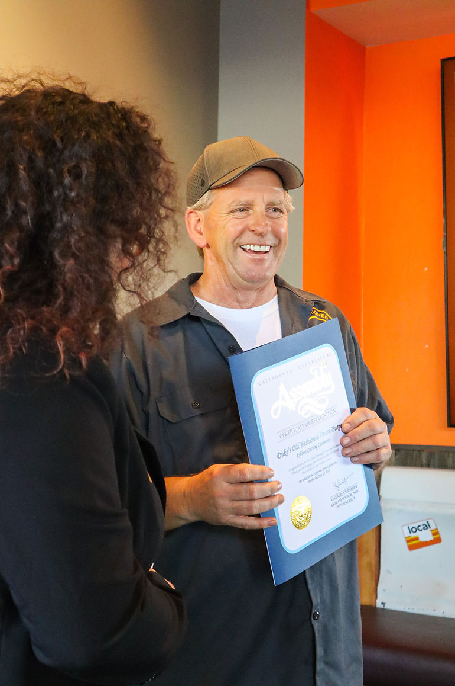
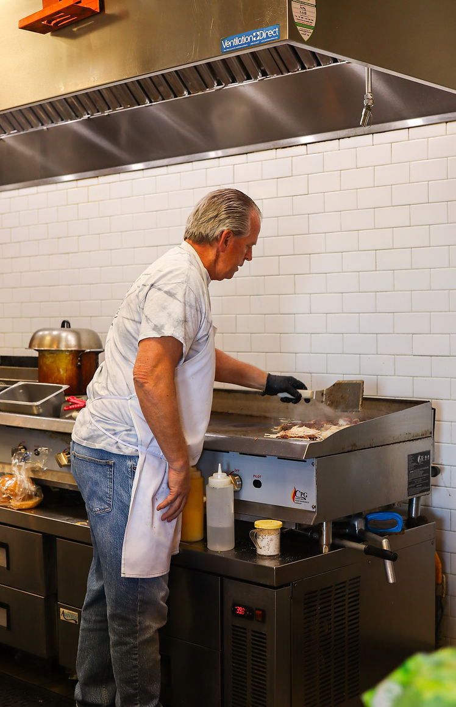

Our Founder
All About Frank Schulz
The story behind the griddle, the name, and the restaurant in La Mesa.

Having grown up in San Diego, as soon as I graduated from Patrick Henry High School I went to Tulsa, Oklahoma to go to school. I ended up meeting a girl and having two incredible children.
Fast forward 34 years and I decided to make the move back to San Diego, because of two girls specifically — my mom and my fiancée Gina.
I would cook onion burgers for my friends and family, and of course they were a big hit! I did a few pop-up lunches and the idea was received well. After years of looking, our La Mesa location came across my plate and things got going to open up the restaurant. It's always been a dream of mine to have my own restaurant after being in the business my whole life.

The Name
One of the questions I get asked all the time is, “Where did the name Duke come from?” Well, the name Duke's Old Fashioned Onion Burgers came from my old dog and friend, Duke.